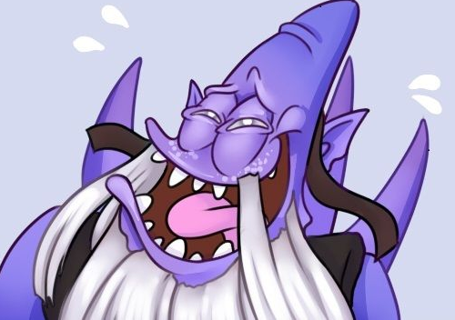

STR
Earthshaker
- Fissure
- Slams the ground with a mighty totem, creating an impassable ridge of stone while stunning and damaging enemy units along its line.
- Enchant Totem
- Empowers Earthshaker's totem, causing it to deal extra damage on the next attack. Upgradable by Aghanim's Scepter.
- Aftershock
- Causes the earth to shake underfoot, adding additional damage and stuns to nearby enemy units when Earthshaker casts his abilities.
- Echo Slam
- Shockwaves travel through the ground, damaging enemy units. Each enemy hit causes an echo to damage nearby units. Real heroes cause two echoes.

Tiny
- Avalanche
- Bombards an area with rocks, continously doing small intervals of damage and stun to enemy units. Avalanche does 3x damage to units being tossed.
- Toss
- Grabs the nearest unit in a 275 radius around Tiny, ally or enemy, and launches it at the target unit or rune to deal damage where they land. If the tossed unit is an enemy, it will take an extra 30% damage.
- Tree Grab
- Grabs a tree to whack enemies on the head for a limited number of times. Grants bonus attack range. Attacks deal more damage (increased vs. buildings) and fully splash on units along the way. The tree can be thrown, expending all the charges, to deal your attack to a unit at a distance.
- Grow
- Tiny gains craggy mass, increases his power and causes him to shrug off debuffs.

Kunkka
- Torrent
- Summons a rising torrent that, after a short delay, hurls enemy units into the sky, stunning, dealing damage and slowing movement speed.
- Tidebringer
- Kunkka's legendary sword grants increased damage and cleaves a large area of effect in front of him for a single strike.
- X Marks the Spot
- Targets a friendly or enemy Hero, marks their position with an X, and returns them to it after several seconds. Kunkka can trigger the return at any time during the duration. Lasts twice as long on allied heroes.
- Ghostship
- Summons a ghostly ship that sails through the battle before smashing apart, damaging and stunning all enemies caught near the wreckage. Allied heroes touched by the Ghostship are given a swig of The Admiral's Rum, receiving bonus movement speed and a delayed reaction to incoming damage. Upgradeable by Aghanim's Scepter.

Bristleback
- Viscous Nasal Goo
- Covers a target in snot, causing it to have reduced armor and movement speed. Multiple casts stack and refresh the duration. Upgradable by Aghanim's Scepter.
- Quill Spray
- Sprays enemy units with quills dealing damage in an area of effect around Bristleback. Deals bonus damage for every time a unit was hit by Quill Spray in the last 14 seconds.
- Bristleback
- Bristleback takes less damage if hit on the sides or rear. If Bristleback takes 210 damage from the rear, he releases a Quill Spray of the current level.
- Warpath
- Bristleback works himself up into a fury every time he casts a spell, increasing his movement speed and damage.

Slardar
- Guardian Sprint
- Slardar slithers ahead, moving significantly faster and passing through units. At ability level 4, Slardar may move at 700 speed while in the river.
- Slithereen Crush
- Slams the ground, stunning and damaging nearby enemy land units. After the stun, the affected units are slowed.
- Bash of the Deep
- After 3 attacks, your next attack will bash the target.
- Corrosive Haze
- Reduces enemy armor to amplify physical damage and provides True Sight of the targeted unit, revealing invisibility.

AGI
Shadow Fiend
- Shadowraze
- Shadow Fiend razes the ground directly in front of him, dealing damage to enemy units in the area. Adds a stacking damage amplifier on the target that causes the enemy to take bonus Shadow Raze damage per stack.
- Necromastery
- Shadow Fiend steals the soul from units he kills, gaining bonus damage. If the killed unit is a hero, he gains 12 souls. On death, he releases half of them from bondage. Upgradable by Aghanim's Scepter.
- Presence of the Dark Lord
- Shadow Fiend's presence reduces the armor of nearby enemies.
- Requiem of Souls
- Shadow Fiend gathers his captured souls to release them as lines of demonic energy. Units near Shadow Fiend when the souls are released can be damaged by several lines of energy. Any unit damaged by Requiem of Souls will have its movement speed and attack damage reduced. Lines of energy are created for every 2 souls captured through Necromastery. Requiem of Souls is automatically cast whenever Shadow Fiend dies, regardless of its cooldown. Upgradable by Aghanim's Scepter.

Gyrocopter
- Rocket Barrage
- Launches a salvo of rockets at nearby enemy units in a radius around the Gyrocopter. Lasts 3 seconds.
- Homing Missile
- Fires a homing missile to seek the targeted enemy unit. The missile gains speed over time, dealing damage and stunning when it impacts the target. Enemy units can destroy the missile before it reaches its target.
- Flak Cannon
- Gyrocopter's attacks hit all enemy units in an area around it for a limited number of attacks. Only the main target of attacks will receive attack bonuses such as Critical Strike. Lasts 15 seconds or until the attacks are used.
- Call Down
- Call down an aerial missile strike on enemy units in a target area. Two missiles arrive in succession, the first dealing major damage and minor slow for 2 seconds; the second dealing minor damage and major slow for 4 seconds. Upgradable by Aghanim's Scepter.

Monkey King
- Boundless Strike
- Monkey King enlarges his staff and slams it against the ground, stunning enemies in a line and damaging them with a critical hit based on his attack. Has True Strike.
- Tree Dance
- Monkey King jumps to a tree and perches atop it. While perched, he gains the Primal Spring ability-a channeled leap attack. If Monkey King's tree is destroyed, he falls and is stunned for 4 seconds. Taking damage from player controlled units or Roshan while on the ground puts Tree Dance on cooldown.
- Jingu Mastery
- Monkey King's attacks awaken the Jingu Bang's power. Upon the fourth hit on the same enemy hero, Monkey King earns four charged attacks that have bonus damage and lifesteal.
- Azinawa's Command
- Monkey King creates a circular formation of soldiers that spread out from his position. If Monkey King leaves the area his soldiers disperse. The soldiers have Monkey King's attack and only target heroes. Monkey King is granted bonus armor for the spell's duration.

Meepo
- Earthbind
- Tosses a net at the target point, pinning down all enemy units. Earthbind prevents invisibility and blink.
- Poof
- Drawing mystical energies from the earth, a Meepo can teleport to another Meepo or itself after channeling for 1.5 seconds, dealing damage in both the departure and arrival locations.
- Ransack
- Steals health from the enemy with each strike and heals all other Meepos for that amount.
- Divided We Stand
- Meepo summons an imperfect, semi-autonomous duplicate of himself, which can gain gold and experience as he does and shares his experience, attributes and abilities. However, the clones cannot wield any items but the boots that Meepo himself wears. If any of the clones die, they all die. Upgradable by Aghanim's Scepter.

Broodmother
- Spawn Spiderlings
- Broodmother injects her young into an enemy unit, dealing damage. The spiderlings will hatch if the target is killed while under this influence.
- Spin Web
- Spins a large web that grants Broodmother a passive movement speed increase, gives free movement, and boosts regeneration while in its vicinity. Spin Web charges restore every 45 seconds. Spin Web can be cast from anywhere as long as the new web touches an existing web. Webs never expire, and can be manually destroyed. When the maximum limit of webs is exceeded, the oldest web disappears.
- Incapacitating Bite
- Broodmother's venom cripples enemy units, causing her attacks to slow and giving the affected unit a chance to miss its attacks.
- Insatiable Hunger
- A violent lust for vital fluids increases Broodmother's attack damage and gives her a vampiric attack.

INT
Oracle
- Fortune's End
- CHANNELED - Gathers Oracle's power into a bolt of scouring energy that, when released, damages, roots, and purges enemies of buffs in an area around the target. If target is an ally it will only purge. Can be channeled for up to 2.5 seconds. The root duration is equal to the time spent channeling. DISPEL TYPE: Basic Dispel
- Fate's Edict
- Oracle enraptures a target, disarming them and granting them 100% magic damage resistance. Can be cast on allies and enemies.
- Purifying Flames
- Burns away impurities, dealing heavy magic damage to the target before causing them to regenerate health over time. The amount of health regenerated over its duration exceeds the amount of initial damage. Can be cast on enemies and allies. Upgradable by Aghanim's Scepter.
- False Promise
- Temporarily alters an ally's destiny, delaying any healing or damage taken until False Promise ends. Any healing that is delayed by False Promise is doubled. Removes most negative status effects and disables on initial cast. DISPEL TYPE: Strong Dispel

Winter Wyvern
- Arctic Burn
- Winter Wyvern soars upon an arctic wind, granting her unobstructed movement and allowing her to exhale a blistering chill into each attack. While soaring, her attacks travel further and faster, and slow enemies with a magical freeze that strips them of 6% of their current health each second. Her sight is also hardened against night's chill, granting her 400 additional vision range at night while soaring. Upgradable by Aghanim's Scepter.
- Splinter Blast
- Launches a ball of brittle ice toward an enemy. The ice shatters on impact, leaving the primary target completely unaffected, while hurling damaging splinters into nearby enemies in a 500 radius. Enemies struck by these splinters are slowed by 30%.
- Cold Embrace
- Encases an ally in an icy cocoon, freezing them solid while healing a base amount as well as a percentage of their maximum health each second. The cocoon blocks all physical damage.
- Winter's Curse
- Winter Wyvern freezes an enemy in place while striking those nearby with a maddening curse which causes them to attack their frozen ally with increased attack speed. The frozen ally and those cursed to attack their ally are immune to all damage from their enemies.

Visage
- Grave Chill
- Visage drains the movement and attack speed of the targeted unit, gaining it for itself.
- Soul Assumption
- Visage gathers charges of soul essence each time nearby heroes take more than 110 damage. When the essence is released, it deals base damage as well as damage for each gathered soul charge.
- Gravekeeper's Cloak
- Visage generates a layered barrier that protects him from damage. If he receives damage from a player, one layer is removed, and takes time to recover.
- Summon Familiars
- Conjures two blind Familiars to fight for Visage. Familiars possess the Stone Form ability, that allows them to turn into stone, stunning enemies upon landing. While in Stone Form, Familiars are invulnerable, and rapidly regenerate their health. Familiars grant high bounty when killed. Upgradable by Aghanim's Scepter.

Outworld Devourer
- Arcane Orb
- Adds extra pure damage to Outworld Devourer's attacks, based on his remaining mana pool. Steals intelligence for %int_steal_duration% seconds per hit when attacking an enemy hero. Arcane Orb damage splashes in a small area.
- Astral Imprisonment
- Places a target unit into an astral prison. The hidden unit is invulnerable and disabled. When the astral prison implodes, it deals damage to the target and nearby enemies with 400 range. Upgradable by Aghanim's Scepter.
- Equilibrium
- Causes any spell damage you deal to slow enemies and restore mana based on how much damage was dealt.
- Sanity's Eclipse
- Unleashes a psychic blast that removes 40% of the mana from affected heroes, while also damaging them based on the difference between the affected hero's Intelligence and Outworld Devourer's. If an enemy hero has the same or higher Intelligence than Outworld Devourer, Sanity's Eclipse will not cause damage. Sanity's Eclipse can hit units trapped by Astral Imprisonment.

Dark Seer
- Vacuum
- Dark Seer creates a vacuum over the target area that sucks in enemy units, disrupting them and dealing damage.
- Ion Shell
- Surrounds the target unit with a bristling shield that damages enemy units in an area around it.
- Surge
- Charges a target friendly unit with power, giving it a brief burst of movement speed and removes unit collisions. Allows the unit to surpass the movement speed limit and cannot be slowed.
- Wall of Replica
- Raises a wall of warping light that slows and creates replicas of any enemy hero who crosses it. Enemy replicas serve at the Dark Seer's will. Replicas last until they are destroyed, or until the wall's duration ends. Upgradable by Aghanim's Scepter.
